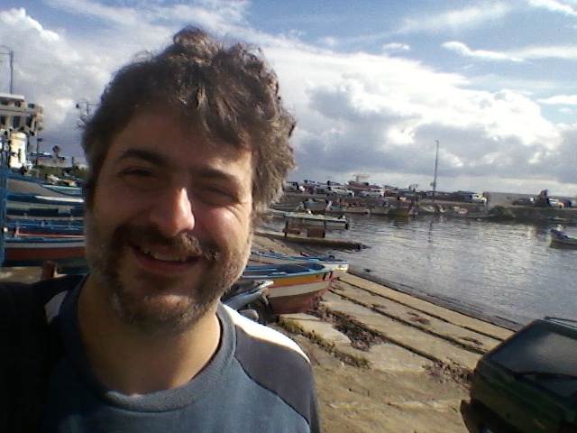
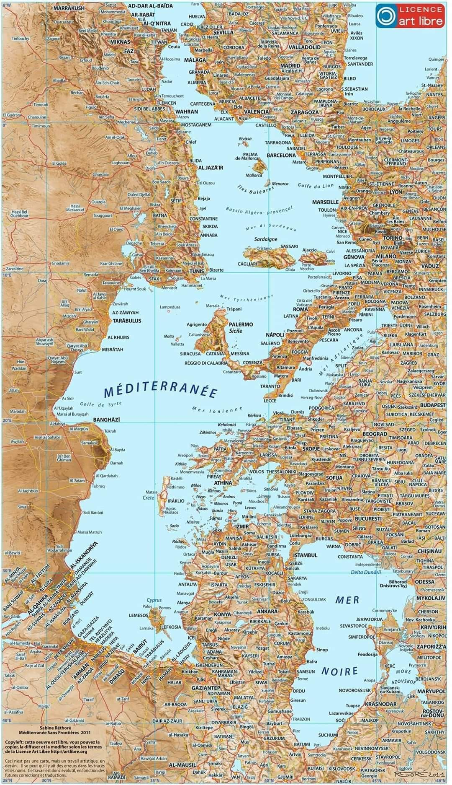

Giuseppe Metere, PhD
 Current positionProfessore Associato (Associate Professor) in Algebra at the Dipartimento di Matematica e Informatica, of the Universitá degli Studi di Palermo.
A.S.N. (Italian qualification for full professor)- settore: 01/A2 - Geometria e Algebra
- settore: 01/A1 - Logica matematica e matematiche complementari
Since December 2023 I am proudly a member of the Accademia Nazionale Scienze Lettere e Arti of Palermo (website)
Address
Dipartimento di Matematica e Informatica
Universitá degli Studi di Palermo
Via Archirafi, 34
90123 Palermo - Italy
If you need to get in touch with me, you can send me an email @ giuseppe.dot.metere.at.unipa.it.
Here you can find my CV.
